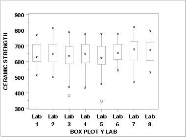
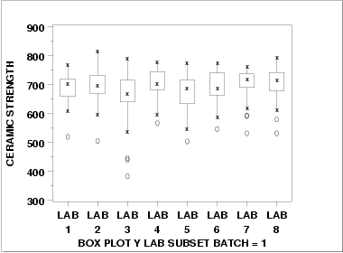
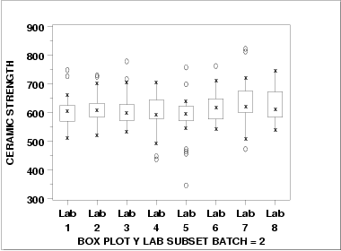

1.
Exploratory Data Analysis
1.4.
EDA Case Studies
1.4.2.
Case Studies
1.4.2.10.
Ceramic Strength
1.4.2.10.4.
|
Analysis of the Lab Effect
|
|
|
Box Plot
|
The next matter is to determine if there is a lab effect.
The first step is to generate a box plot for the ceramic strength
based on the lab.

This box plot shows the
following.
- There is minor variation in the medians for the
8 labs.
- The scales are relatively constant for the labs.
- Two of the labs (3 and 5) have outliers on the low side.
|
|
Box Plot for Batch 1
|
Given that the previous section showed a distinct batch effect,
the next step is to generate the box plots for the two batches
separately.

This box plot shows the
following.
- Each of the labs has a median in the 650 to 700 range.
- The variability is relatively constant across the labs.
- Each of the labs has at least one outlier on the low side.
|
|
Box Plot for Batch 2
|

This box plot shows the
following.
- The medians are in the range 550 to 600.
- There is a bit more variability, across the labs,
for batch2 compared to batch 1.
- Six of the eight labs show outliers on the high side. Three
of the labs show outliers on the low side.
|
|
Conclusions
|
We can draw the following conclusions about a possible lab
effect from the above box plots.
- The batch effect (of approximately 75 to 100 units) on
location dominates any lab effects.
- It is reasonable to treat the labs as homogeneous.
|